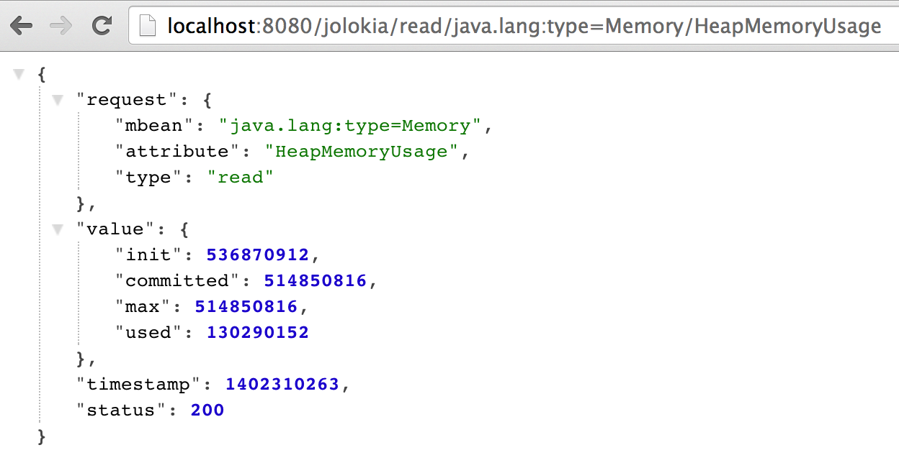

Jolokia: HTTP/JSON bridge for JMX

Very often there is a need to monitor the Java application server. For example, external monitoring tool, like Nagious/Zenoss/Zabbix needs to get some metrics, like heap memory usage or thread count.
Usual way to get that metrics is to setup access to application server via JMX.
But, sometimes, it is not possible to leave some other port opened for JMX and the only port available is HTTP(80 or 8080) or HTTPS(443 or 8443).
Here the Jolokia comes to rescue!
Jolokia is a HTTP/JSON bridge for JMX server. It can be deployed as web archive (.war) to servlet container and expose MBeans via HTTP.
Also, it is quite lightweight - only 285K for webarchive.
Configuration
Here is a small instruction how to get an access to JMX beans in Tomcat via Jolokia.
- Download
jolockia.warand deploy it to servlet container. Run in command line:
You may also use your browser to see JSON response. I suggest installing JSON Fromamter for better view. $ curl localhost:8080/jolokia/read/java.lang:type=Memory/HeapMemoryUsage {"request":{"mbean":"java.lang:type=Memory","attribute":"HeapMemoryUsage","type":"read"},"value":{"init":536870912,"committed":514850816,"max":514850816,"used":132049768},"timestamp":1402310991,"status":200} $ curl localhost:8080/jolokia/read/java.lang:type=Memory/HeapMemoryUsage/used {"request":{"path":"used","mbean":"java.lang:type=Memory","attribute":"HeapMemoryUsage","type":"read"},"value":132049736,"timestamp":1402310735,"status":200}
- Now you can configure your monitoring software to ping server periodically and parse «value» attribute from JSON response.
Released version of Jolokia are available in central maven repository:
<dependency>
<groupId>org.jolokia</groupId>
<artifactId>jolokia-war</artifactId>
<version>1.2.1</version>
</dependency>
Also, Jolokia provides OSGi, Mule and JVM agents as well as Webarchive (War) agent.